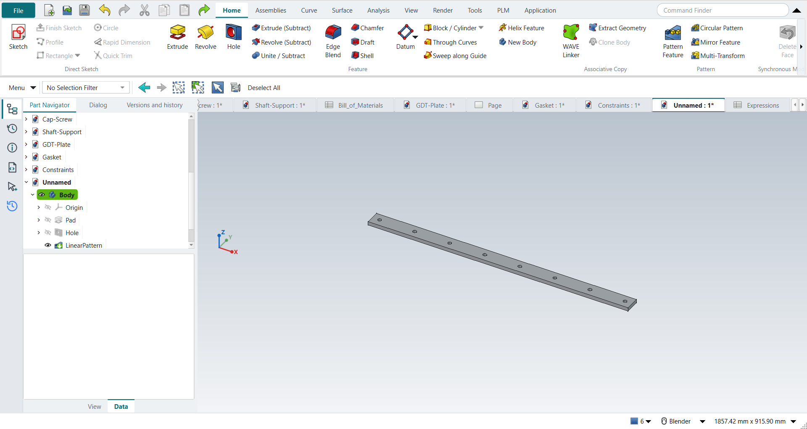

Tutorial K: Parameter-driven flat bar
| Book |
Leake and Borgerson, Engineering Design Graphics, ch. 7, Fig. 7-30 |
| You learn |
The Expressions table (Ctrl+E), dimensions tied to names, configurations |
| Sizes |
L, N and D for two configurations (A: 1219.2 mm, 5 holes, 50.8 mm; B: 914.4 mm, 8 holes, 25.4 mm; the book’s 48, 5, 2 and 36, 8, 1 in). Width, thickness and hole size are not given: 50.8 × 12.7 mm and Ø12.7 here. |

In short
-
Ctrl+E: type
L,N_holes,Dandhole_spacing = (L - 2*D) / (N_holes - 1)into the Expressions sheet. -
Sketch the bar; its length is
=Expressions.L. -
The first hole at
Dfrom the end; Pattern Feature withN_holesoccurrences,hole_spacingapart. -
Type configuration B’s values into the same sheet: the bar follows.
Step by step
| # | In the book (NX) | In FreeCAD NX-Style | Result | Notes |
|---|---|---|---|---|
K1 |
Tools > Expressions (Ctrl+E): L = 48, N = 5, D = 2 (in) |
Ctrl+E opens NXStyle’s Expressions sheet; names and values typed into its cells |
differs |
cells {'A2': "'L", 'B2': '=1219.2 mm', 'A3': "'N", 'B3': '5', 'A4': "'D", 'B4': '=50.8 mm'}; NX lists expressions in a dialog, FreeCAD keeps them in a spreadsheet |
K2 |
Names L, N, D and the equation hole_spacing = (L - 2D)/(N - 1) |
alias per value cell (cell properties); equation typed into B5 |
differs |
hole_spacing = 279.400 mm (279.400 expected, the book’s 11 in); names refused: N (Invalid alias: a unit symbol, newton); used {'L': 'L', 'N': 'N_holes', 'D': 'D'} |
K3 |
Create the flat bar: Extrude (X), XY plane |
X key, plane row + MB2 |
same |
picked XY-plane (Base plane) |
K4 |
Rectangle, its length = L |
R key + 2 MB1 clicks + MB2; length tied to the expression |
differs |
DoF 0; NX types 'L' in the dimension, FreeCAD types '=Expressions.L' (f(x)) in it |
K5 |
Extrude the bar, 0.5 in thick |
Ctrl+Q, 'lengthEdit' = 12.7 mm, MB2 = OK |
same |
volume 786579.1 mm^3, expected 786579.1; 1 solid(s) |
K6 |
Create a hole at one end of the bar |
top face + ribbon 'Home › Feature > Hole' |
differs |
FreeCAD’s Hole drills at circle centres in a sketch on the face |
K7 |
Hole centre at D from the end, on the centre line |
O key + 2 MB1 clicks + MB2; distance from the projected end tied to D |
same |
DoF 0; 50.800 mm from the end, 25.400 mm from the edge |
K8 |
Hole Ø0.5 through |
'Diameter' = 12.7 mm, 'Through all', MB2 = OK |
same |
volume 784970.3 mm^3, expected 784970.3; 1 solid(s) |
K9 |
Rectangular array of the hole: count N, spacing hole_spacing |
hole + ribbon 'Home › Pattern > Pattern Feature', X axis, {'axis': 'Base X-axis', 'mode': 'Spacing', 'count typed': 5, 'spacing': 11.0}; count and spacing tied to N and hole_spacing (f(x)) |
differs |
length 1219.200 mm, 5 holes, first at 50.800 mm, last 1168.400 mm, pitch 279.4000 mm (279.4000 wanted); volume 778535 mm^3 (778535 wanted); NX: the array’s count and pitch fields take the expression names directly |
K10 |
Configuration B: L 36, N 8, D 1 |
values typed into the sheet’s cells |
same |
length 914.400 mm, 8 holes, first at 25.400 mm, last 889.000 mm, pitch 123.3714 mm (123.3714 wanted); volume 577064 mm^3 (577064 wanted) |
K11 |
The part is shown in the graphics window |
render of the graphics window |
same |
2.9% of the view shows the part |
| Result | Means |
|---|---|
same |
The book’s NX steps work as written. |
differs |
It works, but the FreeCAD way is different; the notes say how. |
limit |
The book’s way fails in FreeCAD itself; a workaround follows in the next steps. |
missing |
FreeCAD has no such function; a stand-in follows. |
skipped |
Not replayed; the notes give the reason. |
FAILED |
Did not work. |